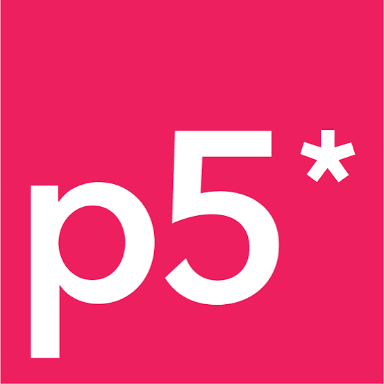

O p5.js transforma código em arte ao simplificar o desenvolvimento visual na web com uma sintaxe simples e direta. É a ferramenta perfeita para dar vida a ideias interativas, animações e jogos sem complicação.
O GitHub é a maior plataforma de hospedagem de código do mundo, funcionando como uma rede social onde programadores colaboram em projetos.
Ele utiliza o sistema Git para salvar o histórico de alterações do seu trabalho, tornando o desenvolvimento em equipe simples e organizado.

O Figma é uma ferramenta de design baseada na nuvem usada para criar interfaces de aplicativos, sites e protótipos interativos.
Por permitir que várias pessoas editem o mesmo projeto juntas e em tempo real, ele se tornou o padrão da indústria para equipes de tecnologia.